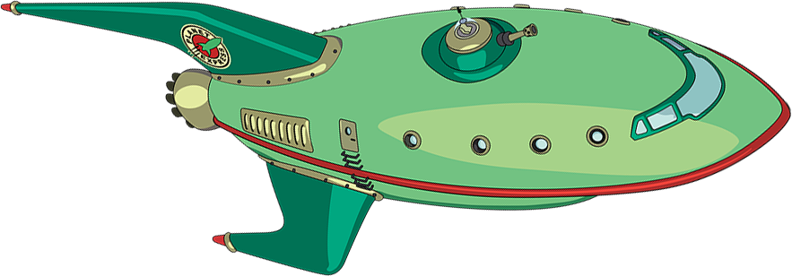
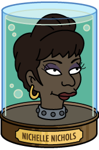
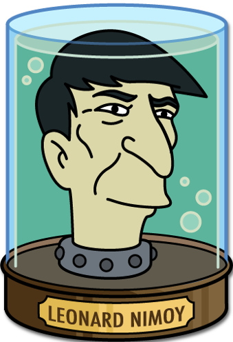
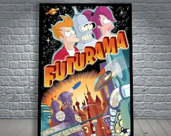

historically, CSS layout was quite tricky
especially when it came to aligning things & sizing things relative to each other
Normal flow
Flex layout
Grid layout
let's look at why it's hard and what's actually going on with the old-style layouts
and then let's have a look at two options we have for making it easier - flexbox & grid
there are others
notice they're elements that you'd either expect to contain other elements (like header, nav, lists, etc)
or to take up the entire width of the page themselves (like hr, p)
sizing
CSS is Awesome
sizing
- width = 100%
- height = height of content
- change the width, changes the height
- fix the height too small = overflow
- show the CSS is awesome meme & explain that it won't do it naturally
Hawaiian
Aussie
Meatlovers Deluxe
what we can't do
make them all the same size as the content
positioning
positioning
- each element appears below the previous one, we can't change that
- move vertically, using margin-top
- move laterally using margin-left/margin-left with negative value/margin: auto
- position: relative - but nothing else moves with it (also transform)
- position: absolute/position: fixed/float take it out of the flow completely
there are others
stuff that appears along with other stuff
sizing
an inline element
size is the size of the content + padding
we can't change it
Lineboxes
Faroutintheunchartedbackwaters
backwatersoftheunfashionable
unfashionableendofthe
westernspiralarmofthe
Galaxyliesasmallunregarded
yellowsun
Positioning
Orbiting this at a distance of roughlyninety-two million miles is an utterly insignificant little blue green planet whose ape-descended life forms are so amazingly primitive that they still think digital watches are a pretty neat idea.
can see the line-boxes in firefox
element can break over line boxes
we can shift element laterally using margin
we can't shift vertically using padding or margin
line boxes can be different sizes
we can move text relative to the line box
middle = baseline + half x height
Normal flow = document layout
flex layout
❌
Orbiting this at a distance of roughly ninety-two million miles is an utterly insignificant little blue green planet whose ape-descended life forms are so amazingly primitive that they still think digital watches are a pretty neat idea.
This planet has - or rather had - a problem, which was this: most of the people living on it were unhappy for pretty much of the time.
So, how does it work?
flex container & flex items
Orbiting this at a distance of roughly ninety-two million miles is an utterly insignificant little blue green planet whose ape-descended life forms are so amazingly primitive that they still think digital watches are a pretty neat idea.
This planet has - or rather had - a problem, which was this: most of the people living on it were unhappy for pretty much of the time.
flex container vs flex items
display: flex, width: calc(50% - 5px), margin: 0
instead of a linebox, we have a flexbox (show in browser)
by default
- flex items scrunch up instead of breaking over several flexboxes (inside flexbox is normal flow)
- flex item stretches vertically
shrink + nowrap means we can do stuff like this
Sizing
grow & shrink
thing 1
thing 2
thing 3
no matter how big the container gets, the titles will stretch out to fill the space
Positioning
flex-direction

vertical vs horizontal
Positioning flex items
one of the most useful things
demo align-items & justify-content
❌
The Head Museum
super helpful for aligning text & images
Number of popplers eaten
and we can use it for more outlandish things
size & position is only relative to other elements in the same flexbox
Futurama Brain Slug light
AU$21.97
Custom Family Portrait
AU$16.19
New New York Travel Poster
AU$21.97
Slurm Earrings
$AU14.95
Fry pin
AU$12.50

Futurama Framed Poster
AU$79.99
Leather Wallet
AU$71.78
size and position is _per flexbox_
no way to align things between flexboxes
if we use grow to fill up the space, that bottom one will fill the whole row
(which is what we want sometimes, but other times, we need...)
grid
no lineboxes or flexboxes
you can create any layout that you like, as long as you like grids
like a flex container, we create a grid container by giving an element display: grid
any children of the element now become grid items
we set up our grid by defining rows and colums
then, when we place children inside the container, they're laid out according to the grid
if you've ever worked with designers ... 12 column layout
columns for layout pre-dates web
setup columns, place elements, potentially spanning several columns
on the web we use 12 columns
not inherently good design
easy to divide up evenly, bootstrap, etc ok for everyone
1 size fits all....
tweet doesn't fit in 12 column layout
it likes 5
Futurama Robit@FuturamaBot3000 · 2h
Welcome to the world of tomorrow! The time is 12:01 am. Good news everyone! Today is Sunday November 21, 3021, that means only 40 days left in the year!
.tweet {
display: grid;
grid-template-columns: repeat(5, 1fr);
grid-template-areas: 'avatar title title title menu'
'avatar text text text text'
'. img img img img'
'. btn btn btn btn';
}
.avatar {
grid-area: avatar;
}
.title {
grid-area: title;
}
generic, 12-column layout -> semantic specific layout
still using equal sized columns
with grid, we can make columns all different sizes - or not even specify an
exact size. just give the browser some guidelines at let it work it out at runtime
Responsive grid layouts
Panucci's Pizza
Hawaiian
Ham, Cheese & Pineapple
$18.00
Aussie
Ham, Cheese, Pineapple & Egg
$18.00
Meatlovers Deluxe
Meat, Meat, Meat & Pineapple
$18.00
fr: make description 1fr, make name 1fr, make description 2fr
make price max-content
make name minmax(max-content, 1fr)
Futurama Brain Slug light
AU$21.97
Custom Family Portrait
AU$16.19
New New York Travel Poster
AU$21.97
Slurm Earrings
$AU14.95
Fry pin
AU$12.50
Futurama Framed Poster
AU$79.99
Leather Wallet
AU$71.78
sometimes we don't know how many columns we want
we know min size and just want whatever will fit
also want them to stretch to take up available space
grid-template-columns: repeat(auto-fit, minmax(200px, 1fr))